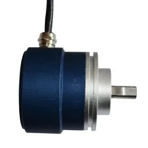

China's Humanoid Actuator Suppliers
Encoders sit inside every actuator — see the full picture.
Every joint in a humanoid needs to know its exact angle, thousands of times a second. That readout comes from an encoder — a component Heidenhain ruled for decades. Now Chinese suppliers are closing the gap, one bit at a time.

An encoder converts the rotation of a joint into a digital angle. Without it, a robot arm has no idea where it is — no precision motion, no safe interaction. A single humanoid can carry dozens of them, in every revolute joint and linear actuator.
Optical encoders are the precision benchmark, but their glass code discs require sub-micron lithography — the same machinery family as semiconductor manufacturing. Germany's Heidenhain has held this for decades. Magnetic encoders trade a little precision for far cheaper, more robust designs, which is exactly where Chinese suppliers attacked.
| Company | Inovance (汇川) | HCFA (禾川) | Yuheng (禹衡) |
|---|---|---|---|
| Role | #1 servo maker & robot encoder leader (~18.6%) | Miniature magnetic specialist (~11.4%) | Optical encoder pioneer, 18-bit in mass |
| Signal | Optimus China servo supplier; 1.24M encoder units in 2025 | 12mm MAG12/22, 17-23 bit, 54 per humanoid | Breaking Heidenhain's code-disc barrier; 23-bit in R&D |
Inovance shipped 1.24 million robot encoders in 2025 (+22.8% YoY) and became an early Optimus China servo supplier. HCFA packs a 12mm magnetic encoder with 17-23 bit resolution and ±0.005° repeatability — up to 54 units per humanoid, used in UBTECH and Xiaomi joints. Yuheng Optical (under Aopu Photonics) is the strongest domestic optical player: 18-bit code discs in mass production, 23-bit still in R&D — the last wall.
In 2026 CT-Unite released China's first gallium-nitride magnetic encoder chip (CT-21X) purpose-built for humanoid joints, using GaN 2DEG physics to cut latency and power. If specialized encoder silicon takes off, the cost curve flips the way it did for other Chinese components.
Domestic absolute encoders passed 4.5 million units shipped in 2026, ~58% of China's demand. Servo leaders are vertically integrating, and every bit of precision they claw from Heidenhain is a bit of humanoid cost that comes down.
Encoders sit inside every actuator — see the full picture.
Motors plus encoders equals a working joint.
The heavy-load joint partner to the encoder.
Harmonic + encoder = the standard humanoid joint.
Company profiles, product pages and supplier analysis for China's robotics ecosystem.